토목기사 (2010-03-07 기출문제)
1과목: 응용역학
1. 아래 그림과 같은 보에서 C점의 모멘트를 구하면?
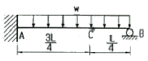
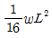
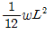
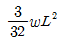
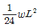
(정답률: 62%)

2. 다음 그림과 같이 2경간 연속보의 첫 경간에 등분포하중이 작용한다. 중앙지점 B의 휨모멘트는?
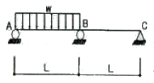
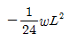
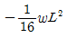
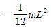
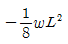
(정답률: 58%)
3. 상하단이 고정인 기둥에 그림과 같이 힘 P가 작용한다면 반력 RA, RB 값은?
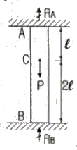
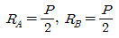
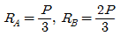
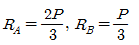
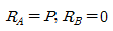
(정답률: 69%)
4. 평면응력을 받는 요소가 다음과 같이 응력을 받고 있다. 최대 주응력은?
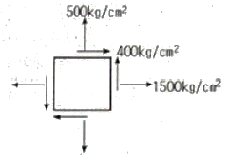
- 640 kg/cm2
- 1640 kg/cm2
- 360 kg/cm2
- 1360 kg/cm2
(정답률: 75%)
5. 무게 3000kg인 물체를 단면적이 2cm2인 1개의 동선과 양쪽에 단면적이 1cm2인 철선으로 매달았다면 철선과 동선이 인자응력 σa, σc는 얼마인가? (단, 철선의 탄성계수 Ea=2.1×106kg/cm2, 동선의 탄성예수 Ec=1.⑤×106kg/cm2 이다.)
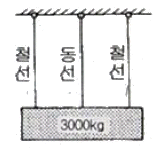
- σa = 1000kg/cm2, σc=1000kg/cm2
- σa = 1000kg/cm2, σc=500kg/cm2
- σa = 500kg/cm2, σc=1500kg/cm2
- σa = 500kg/cm2, σc=500kg/cm2
(정답률: 69%)
6. 다음 그림에서 처음에 P1이 작용했을 때 자유단의 처짐 δ1이 생기고, 다음에 P2를 가했을 때 자유단의 처짐이 δ2만큼 증가되었다고 한다. 이 때 외력 P1이 행한 일은?
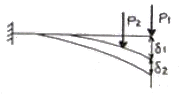
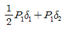
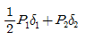
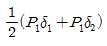
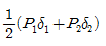
(정답률: 65%)
7. 그림과 같은 집중하중이 작용하는 캔틸레버보(cantilever beam)의 A점의 처짐은? (단, EI는 일정하다.)
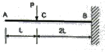
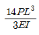
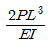
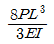
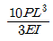
(정답률: 34%)
8. 다음 그림과 같은 반원형 3힌지 아치에서 A점의 수평 반력은?
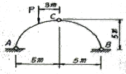
- P
- P/2
- P/4
- P/5
(정답률: 60%)
9. 그림과 같이 두 개의 나무판이 못으로 조립된 T형보에서 V=155kg 가 작용 할 때 한 개의 못이 전단력 70kg을 전달할 경우 못의 허용 최대 간격은 약 얼마인가? (단, I=11354.0cm4)
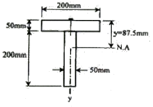
- 7.5cm
- 8.2cm
- 8.9cm
- 9.7cm
(정답률: 40%)
10. 다음 그림과 같은 정정 하멘에서 C 점의 수직 처짐은?
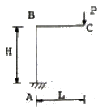
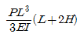
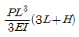
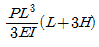
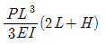
(정답률: 61%)
11. 다음 그림과 같은 단면의 A-A 축에 대한 단면 2차 모멘트는?
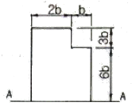
- 558 b4
- 623 b4
- 685 b4
- 729 b4
(정답률: 73%)
12. 그림과 같은 정정 라멘에서 C점의 휨모멘트는?
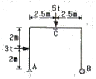
- 6.25tㆍm
- 9.25tㆍm
- 12.3tㆍm
- 18.2tㆍm
(정답률: 58%)
13. 다음 그림과 같은 트러스에서 AC의 부재력은?
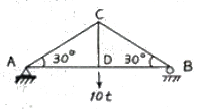
- 인장 10 t
- 인장 15 t
- 압축 5 t
- 압축 10 t
(정답률: 65%)
14. 그림과 같은 게르버보에서 하중 P만에 의한 C점의 처짐은? (단, 여기서 EI는 일정하고 EI=2.7×1011kgㆍcm2이다.)
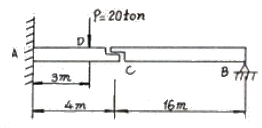
- 0.7 cm
- 2.7 cm
- 1.0 cm
- 2.0 cm
(정답률: 58%)
15. 지름 20mm, 길이 3m의 연강원축(軟鋼圓軸)에 3000kg의 인장하중을 작용시킬 때 길이가 1.4mm가 늘어났고, 지름이 0.0027mm 줄어 들었다. 이 때 전단 탄성계수는 약 얼마인가?
- 2.63×106 kg/cm2
- 3.37×106 kg/cm2
- 5.57×106 kg/cm2
- 7.94×105 kg/cm2
(정답률: 50%)
16. 다음 내민보에서 B점의 모멘트와 C점의 모멘트의 절대값의 크기를 같게 하기 위한 L/a의 값을 구하면?
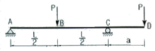
- 6
- 4.5
- 4
- 3
(정답률: 61%)
17. 다음 봉재의 단면적이 A이고 탄성계수가 E일 때 C점의 수직 처짐은?
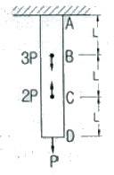
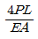
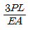
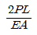
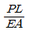
(정답률: 51%)
18. 다음 그림과 같은 보에서 A점의 반력이 B점의 반력의 2배가 되도록 하는 거리 x는 얼마인가?
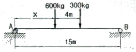
- 1.67cm
- 2.67cm
- 3.67cm
- 4.67cm
(정답률: 58%)
19. 그림과 같은 T형 단면의 x축의 대한 회전반경은?
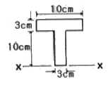
- 8.47cm
- 9.12cm
- 10.37cm
- 11.52cm
(정답률: 42%)
20. 길이 2m, 지름 4cm의 원형 단면을 가진 일단 고정, 타단힌지의 장주에 중심축 하중이 작용할 때 이 단면의 좌굴 응력은? (단, E=2×106kg/cm2이다.)
- 769kg/cm2
- 987kg/cm2
- 1254kg/cm2
- 1487kg/cm2
(정답률: 47%)
2과목: 측량학
21. 노선에 있어서 곡선의 반지름만이 2배로 증가하면 캔트(cant)의 크기는?
- 1/√2로 줄어든다.
- 1/2로 줄어든다.
- 1/4로 줄어든다.
- 2배로 증가한다.
(정답률: 59%)
22. 축척 1:50000 우리나라 지형도에서 990m의 산정과 510m의 산중척 간에 들어가는 계곡선의 수는?
- 4개
- 5개
- 20개
- 24개
(정답률: 47%)
23. A, B, C 세 사람이 같은 조건에서 한 각을 측정하였다. A는 1회 측정에 45° 20‘ 37“, B는 4회 측정하여 평균 45° 20’ 32”, C는 8회 측정하여 평균 45° 20‘ 33“ 를 얻었다. 이 각의 최확값은?
- 45° 20‘ 38“
- 45° 20‘ 37“
- 45° 20‘ 33“
- 45° 20‘ 30“
(정답률: 61%)
24. 1600m2의 정사각형 토지면적을 0.5m2까지 정확하게 구하기 위해서 필요한 변길이의 최대 허용 오차는?
- 6mm
- 8mm
- 10mm
- 12mm
(정답률: 55%)
25. 수준측량에서 수준 노선의 거리와 무게(경중률)와의 관계로 옳은 것은?
- 무게는 노선거리의 제곱근에 비례한다.
- 무게는 노선거리에 비례한다.
- 무게는 노선거리의 제곱근에 반비례한다.
- 무게는 노선거리에 반비례한다.
(정답률: 49%)
26. 측량설과표에 측정A의 진북ㅎ=방향각은 0° 06‘ 17“이고, 측점A에서 측점B에 대한 평균방향각은 263° 38’ 26”로 되어 있을 때에 측정A에서 측정B에 대한 역방위각은?
- 83° 32‘ 09“
- 263° 32‘ 09“
- 83° 44‘ 43“
- 263° 44‘ 43“
(정답률: 44%)
27. 단일 환의 수준망에서 관측결과로 생긴 허용오차 이내의 폐합오차를 보정하는 방법으로 옳은 것은?
- 모든 점에 등배분한다.
- 출발 기준점으로부터의 거리에 비례하여 배분한다.
- 출발 기준점으로부터의 거리에 반비례하여 배분한다.
- 각 점의 표고값 크기에 비례항 배분한다.
(정답률: 39%)
28. 초점거리 150mm인 카메라로 1:20000 축척의 항공사진을 촬영할 때의 비행고도(m)는?
- 1000m
- 2000m
- 3000m
- 4000m
(정답률: 60%)
29. 등고선의 성질에 대한 설명으로 옳지 않은 것은?
- 볼록한 등경사면의 등고선 간격은 산정으로 갈수록 좁아진다.
- 등고선은 도면 내ㆍ외에서 폐합하는 폐곡선이다.
- 지도의 도면 내에서 폐합하는 경우 등고선의 내부에는 산꼭대기 또는 분지가 있다.
- 절벽은 등고선이 서로 만나는 곳에 존재한다.
(정답률: 50%)
30. 거리의 정확도를 10-6에서 10-5으로 변화를 주었다면 평면으로 고려할 수 있는 면적 기준의 측량범위의 변화는?
- 1/√10로 감소한다.
- √10배 증가한다.
- 10배 증가한다.
- 100배 증가한다.
(정답률: 48%)
31. 평판 측량의 정치과정 중에서 오차에 가장 큰 영향을 주는 것은?
- 정준
- 구심
- 표정
- 온도변화
(정답률: 51%)
32. 수평 및 수직거리를 동일한 정확도로 관측하여 육면체의 체적을 2000m3로 구하였다. 체적계산의 오차를 0.5m3이내로 하기 위해서는 수평 및 수직거리 관측의 최대 허용 정확도는 얼마로 해야 하는가?
- 1/12000
- 1/8000
- 1/110
- 1/35
(정답률: 55%)
33. 80m의 측선을 20m 줄자로 관측하였다. 만약 1회의 관측에 +4mm의 정오차와 ±3mm의 부정오차가 있었다면 이 측선의 거리는?
- 80.006 ± 0.006m
- 80.006 ± 0.016m
- 80.016 ± 0.006m
- 80.016 ± 0.016m
(정답률: 62%)
34. 동서 20km, 남북 50km의 직사각형 지역에서 축척 1:3000의 항공사진 한 장의 입체모델에 찍히는 면적을 15.07㎢라 하면 이 지역에 필요한 사진 매수는? (단, 안전율은 30%임)
- 87장
- 119장
- 156장
- 182장
(정답률: 46%)
35. 캔트(cant)체각법과 완화곡선에 관한 설명으로 옳지 않은 것은?
- 캔트(cant)체감법에는 직선체감법과 곡선체감법이 있다.
- 클로소이드는 직선체감을 전제로 하여 이것에 대응한 곡률반경을 가진 곡선이다.
- 렘니스케이트는 곡선체감을 전제로 하여 이것에 대응한 곡률반경을 가진 곡선이다.
- 철도는 반파장정현곡선을 캔트(cant)의 원활체감곡선으로 이용하기도 한다.
(정답률: 38%)
36. 폐합트래버스의 경ㆍ위거 계산에서 CD측선의 배횡거는?
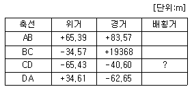
- 62.65m
- 103.25m
- 125.30m
- 165.90m
(정답률: 55%)
37. 클로소이드곡선에서 R=450m, 매개변수 A=300m 일 때 곡선의 시정으로부터 100m 지점의 곡률반경은?
- 450m
- 900m
- 1350m
- 1800m
(정답률: 55%)
38. 기차 및 구차에 설명 중 옳지 않은 것은?
- 삼각정 상호간의 고저차를 구하고자 할 때와 같이 거리가 상당히 떨어져 있을 때 지구의 표면이 구상이므로 일어나는 오차를 구차라 한다.
- 구차는 시준거리의 제곱에 비례한다.
- 공기의 온도, 기압 등에 의하여 시준선에서 생기는 오차를 기차라 하며 대략 구차의 1/7 정도이다.
- 기차=
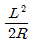
, 구차=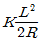
의 식으로 구할 수 있다.(여기서, L : 2점간의 거리, R : 지구의 반경(6370km), K : 굴절 계수)
(정답률: 63%)
39. 곡선 반지름 R=300m, 곡선 길이 L=20m인 경우 현과 호의 길이의 차는?
- 0.2cm
- 0.4cm
- 2cm
- 4cm
(정답률: 35%)
40. 수면으로부터 수심(H)의 0.2H, 0.4H, 0.6H, 0.8H 지점의 유속(V0.2, V0.4, V0.6, V0.8)을 관측하여 평균유속을 구하는 공식으로 옳지 않은 것은?
- V=V0.6
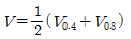
(정답률: 57%)
3과목: 수리학 및 수문학
41. 2개의 불투수층 사이에 있는 대수층의 두께 a, 투수계수 k인 곳에 반지름 r0인 굴착정(artesian well)을 설치하고 일절 양수량 Q를 양수하였더니, 양수 전 굴착정 내의 수위 H가 h0로 강하하여 정상흐름이 되었다. 굴착정의 영향원 반지름을 R이라 할 때 (H-h0)의 값은?
(정답률: 53%)
42. 지름 100mm인 관에 20℃의 물이 흐를 경우 한계유속은 얼마인가? (단, 물의 온도 20℃에서의 동점성계수는 1×10-2 stokes이고 한계 Reynolds 수는 2300 이다.)
- 1.65 cm/s
- 2.3 cm/s
- 23 cm/s
- 230 cm/s
(정답률: 47%)
43. 수리학적으로 가장 유리한 단면에 대한 설명으로 옳지 않은 것은?
- 수로의 경사, 조도계수, 단면이 일정할 때 최대유량을 통수시키게 하는 가장 경제적인 단면이다.
- 동수반경이 최소일 때 유량이 최대가 된다.
- 최적 수리단면에서는 직사각형 수로단면이나 사다리꼴 수로단면 모두 동수반경이 수심이 절반이 된다.
- 기하학적으로 반원 잔면이 최적 수리단면이나 시공상의 이유로 직사각형 단면도는 사다리꼴 단면이 사용된다.
(정답률: 42%)
44. 강우자료의 변화요소가 발생하여 전반적인 자료의 일관성이 없어진 경우, 과거의 기록치를 보정하기 위한 방법은?
- 정상연강수량비율법
- DAD분석
- Thiessen의 가중법
- 이중누가우량분석
(정답률: 57%)
45. 관망에 대한 설명으로 옳지 않은 것은?
- 다수의 분기관과 합류관으로 혼합되어 하나의 관계통으로 연결된 관로를 칭한다.
- Hardy-Cross법은 관망을 가장 정확하게 계산할 수 있는 해석방법이다.
- 관망계산은 각 관로의 유량과 손실수두의 관계로붜 해석한다.
- 각 폐합관에서 관로 손실수두의 합이 0 이라고 가정하여 해석하는 것이 효과적이다.
(정답률: 45%)
46. 지름이 30cm, 길이 1m인 관에 물이 흐르고 있을 때 마찰손실이 30cm이라면 관벽에 작용하는 마찰력 τ0는?
- 4.5g/cm2
- 2.25g/cm2
- 1.0g/cm2
- 0.5g/cm2
(정답률: 52%)
47. 지름 d의 구(球)가 밀도ρ의 유체 속을 유속 V로서 침강할 때 구(球)의 항력(D)은? (단, CD는 항력계수)
(정답률: 55%)
48. 비피압 대수층의 우물에서 100m 떨어진 지점의 비하수위가 50m이고, 지하수위의 경사가 0.⑤, 투수계수가 20m/day일 때 우물의 양수량은?
- 약 28200m3/day
- 약 31400m3/day
- 약 36800m3/day
- 약 42500m3/day
(정답률: 41%)
49. 물의 체적탄성계수 E, 체적변형율 e 등과 압축계수 C의 관계를 바르게 표시한 식은?
(정답률: 42%)
50. 그림과 같은 관로의 흐름에 대한 설명으로 옳지 않은 것은? (단, h1, h2는 위치 1, 2에서의 손실수두, hLA, hLB는 각각 관로 A 및 B에서의 손실수두이다.)
- hLA = hLB
- Q = QA + QB
- h2 = h1 + 2hLB
- h2 = h1 + hLA
(정답률: 41%)
51. Francis 공식으로 전폭 위어(weir)의 월류량을 구할 때 위어폭의 측정에 2%의 오차가 있다면 유량에는 얼마의 오차가 있게 되는가?
- 1%
- 2%
- 3%
- 5%
(정답률: 30%)
52. 그림과 같은 모양의 분수(噴水)를 만들었을 때 분수의 높이(Hv)는? (단, 유속계수 Cv는 0.96으로 한다.)
- 10m
- 9.6m
- 9.22m
- 9m
(정답률: 41%)
53. 그림에서와 같이 130m×250m의 주차장이 있다. 주차장 중앙으로 우수거가 설치되어 있으며 이 우수거를 통한 도달시간은 5분이며 지표흐름(overland flow)으로 인하여 우수거에 수직으로 도달하는 도달시간(예로 B에서 C까지)은 15분이라 한다. 만일 50mm/hr의 강도를 가진 강우가 5분간만 내렸다고 할 때 A점에서의 첨두 유량은? (단, 주차장의 유출계수는 0.85 라 한다.)
- 3.837 m3/sec
- 0.387 m3/sec
- 0.128 m3/sec
- 0.0320 m3/sec
(정답률: 35%)
54. 저수위 (L. W. L)란 1년을 통해서 몇 일 동안 이보다 저하하지 않는 수위를 말하는가?
- 90 일
- 185 일
- 200 일
- 275 일
(정답률: 42%)
55. 하천유출에서 rating curve는 어느 것에 관련된 것인가?
- 수위 - 시간
- 수위 - 유량
- 수위 - 단면적
- 수위 - 유속
(정답률: 40%)
56. 원관 내에 물이 반(半)만 차서 흐르고 있다. 관경(觀經)을 D라고 할 때 경심(동수반경)은?
- D
- D/2
- D/4
- D/8
(정답률: 55%)
57. 유역의 평균강우량 산정방법이 아닌 것은?
- 산술평균법
- 티센다각형법
- 등우선법
- 정상연평균강수량법
(정답률: 41%)
58. 개수로 내의 흐름에 대한 설명으로 옳은 것은?
- 동수경사선은 에너지선과 언제나 평행하다.
- 에너지선은 자유표면과 일치한다.
- 에너지선과 동수경사선은 일치한다.
- 동수경사선은 자유표면과 일치한다.
(정답률: 31%)
59. 에너지 보정계수 (α)와 운동량 보정계수(β)에 대한 설명으로 옳지 않은 것은?
- 흐름이 이상유체일 때는 α와 β는 각각 1.5이다.
- 균일 유속분포일 때는 α=β=1이다.
- 흐름이 실제유체일 때는 α와 β는 각각 1보다 크다.
- α, β값은 흐름이 난류일 때 보다 층류일 때가 크다.
(정답률: 33%)
60. 유량 6.28m3/sec를 흐르게 하기 위하여 내경 2m이 주철관 100m를 설치할 경우의 관로 경사는? (단, 마찰손실계수는 0.03이다.)
- 1/1000
- 2/1000
- 3//1000
- 4/1000
(정답률: 47%)
4과목: 철근콘크리트 및 강구조
61. 옹벽의 설게 및 구조해석에 대한 설명으로 틀린 것은?
- 활동에 대한 저항력은 옹벽에 작용하는 수평력의 1.5배 이상이어야 한다.
- 부벽식 옹벽의 추가철근은 저판에 지지된 캔틸레버로 설계하여야 한다.
- 저판의 뒤굽팜은 정확한 방법이 사용되지 않는 한, 뒷굽판 상부에 재하되는 모든 하중을 지지하도록 설계하여야 한다.
- 캔틸레버식 옹벽의 저판은 추가철근과 접합부를 고정단으로 간주한 캔틸레버로 가정하여 단면을 설계할 수 있다.
(정답률: 43%)
62. 철골 압축재의 좌굴 안정성에 대한 설명 중 틀린 것은?
- 좌굴길이가 길수록 유리하다.
- 힌지지지 조다 고정지지가 유리하다.
- 단면2차모멘트 값이 클수록 유리하다.
- 단면2차반지름이 클수록 유리하다.
(정답률: 53%)
63. 계수하중에 위한 전단력 Vu=75kN을 받을 수 있는 직사각형 단면을 설계하려고 한다. 구정에 이한 최소 전단철근을 사용할 경우 필요한 콘크리트의 최소단면적 bnd는 얼마인가? (단, fck=28MPa, fy=300MPa)
- 101090mm2
- 103073mm2
- 106303mm2
- 113390mm2
(정답률: 49%)
64. 보강철근의 fy=350MPa일 대 공칭강도에서 최외단 인장철근의 순인장변형률 ∊t<0.00175 이고 나선철근으로 보강된 단면의 강도감소계수는 얼마인가?
- 0.85
- 0.75
- 0.70
- 0.65
(정답률: 37%)
65. 그림과 같은 철근콘크리트보 단면이 파괴시 인장철근의 변형률은? (단, fck=28MPa, fy=350MPa, As=1520mm2)
- 0.004
- 0.008
- 0.011
- 0.015
(정답률: 47%)
66. 2방향 슬래브의 직접설계법을 적용하기 위한 제한사항으로 틀린 것은?
- 각 방향으로 3경간 이상이 연속되어야 한다.
- 슬래브판들은 단변 경간에 대한 장변 경간의 비가 2 이하인 직사각형이어야 한다.
- 모든 하중은 연직하중으로서 슬래브판 전체에 등분포되어야 한다.
- 연속한 기중 중심선으로부터 기둥의 이탈은 이탈방향 경간의 최대 20%까지 허용할 수 있다.
(정답률: 50%)
67. 그림과 같은 맞대기 용접의 용접부에 발생하는 인장응력은?
- 100MPa
- 150MPa
- 200MPa
- 220MPa
(정답률: 54%)
68. 다음 그림과 같이 W=40kN/m 일 때 PS강재가 단면 중심에서 긴장되며 인장측의 콘크리트 응력이 “0”이 되려면 PS 강재에 얼마의 긴장력이 작용하여야 하는가?
- 46⑤ kN
- 5000 kN
- 5200 kN
- 5625 kN
(정답률: 51%)
69. 부분적 프리스트레싱(Partial Prestressing)에 대한 설명으로 옳은 것은?
- 구조물에 부분적으로 PSC부재를 사용하는 것
- 부재단면의 일부에만 프리스트레스를 도입하는 것
- 설계하중의 일부만 프리스트레스에 부담시키고 나머지는 긴장재에 부담시키는 것
- 설계하중이 작용할 때 PSC부재단면의 일부에 인자응력이 생기는 것
(정답률: 40%)
70. b=300mm, d=500mm, As=3-D25=1520mm2가 1열로 배치된 단철근 직사각형 보의설계 휨강도 ∅Mn은 얼마인가? (단, fck=28MPa, fy=400MPa이고, 과소철근보이다.)
- 132.5kNㆍm
- 183.3kNㆍm
- 263.4kNㆍm
- 307.7kNㆍm
(정답률: 40%)
71. 지속하중에 의한 탄성 처짐이 20mm 발생한 캔틸레버 보의 5년간의 총 처짐을 계산하면 얼마인가? (단, 보의 인장 철근비는 0.02, 지지부의 압축철근비는 0.01이다.)
- 26.7mm
- 36.7mm
- 46.7mm
- 56.7mm
(정답률: 43%)
72. 연속 휨부재에 대한 해석 중에서 형행 콘크리트구조설계기준에 따라 부모멘트를 증가 또는 감소시키면서 재분배할 수 있는 경우는?
- 근사해법에 의해 휨모멘트를 계산한 경우
- 하중을 적용하여 탄성이론에 의하여 산정한 경우
- 2방향 슬래브 시스템의 직접설계법을 적용하여 계산한 경우
- 2방향 슬래브 시스템을 등가골조법으로 해석한 경우
(정답률: 42%)
73. 표준갈고리를 갖는 인장 이형철근의 정착길이에 대한 보정계수로 틀린 것은?
- fy=400MPa 이외의 철근 :
- 배치된 철근량이 소요철근량을 초과하는 경우 :
- 경량콘크리트 : 1.3
- 에폭시 도막된 갈고리 철근 : 1.2
(정답률: 41%)
74. 단철근 직사각형보에서 부재축에 직각인 전단 보강 철근이 부담해야 할 전단력 Vo가 350kN 이라 할 때 전단 보강 철근의 간격 s는 얼마 이하라야 하는가? (단, Av = 253mm2, fy = 400MPa, fck = 28MPa, bw = 300mm, d =580mm)
- 145 mm
- 168 mm
- 186 mm
- 335 mm
(정답률: 44%)
75. b=300mm, d=550mm, d'=50mm, As=4500mm2, As'=2200mm2인 복철금 직사각형 보가 연성파괴를 한다면 설계 휨모멘트 강도(øMr)는 얼마인가? (단, fck=21MPa, fy=300MPa)
- 516.3 kNㆍm
- 565.3 kNㆍm
- 599.3 kNㆍm
- 612.9 kNㆍm
(정답률: 46%)
76. 콘크리트구조물에서 비틀림에 대한 설계를 하려고 할 때, 계수비틀림모멘트(Tu)를 계산하는 방법에 대한 다음 설명 중 틀린 것은?
- 균열에 의하여 내력의 재분배가 방생하여 비틀림 모멘트가 감소할 수 있는 부정정 구조물의 경우, 최대 계수비틀림모멘트를 감소시킬 수 있다.
- 철근콘크리트 부재에서, 받침부로부터 d이내에 위치한 단면은 d에서 계산된 Tu보다 작지 않은 비틀림모멘트에 대하여 설계하여야 한다.
- 프리스트레스트 부재에서 받침부로부터 d이내에 위치한 단면을 설계할 때 d에서 계산된 Tu보다 작지 않은 비틀림모멘트에 대하여 설계하여야 한다.
- 정밀한 해석을 수행하지 않은 경우, 슬래브로부터 전달되는 비틀림하중은 전체 부재에 걸쳐 균등하게 분포하는 것으로 가정할 수 있다.
(정답률: 50%)
77. 그림과 같은 원형철근기둥에서 콘크리트구조설계기준에서 요구하는 최대 나선철근의 간격은 약 얼마인가? (단, fck=28MPa, fyt=400MPa, D10철근의 공칭단면적은 71.3mm2이다.)
- 38 mm
- 42 mm
- 45 mm
- 56 mm
(정답률: 38%)
78. 다음 그림과 같이 직경 25mm의 구멍이 있는 판(plate)에서 인장응력 검토를 위한 순폭은 약 얼마인가?
- 160.4mm
- 150mm
- 145.8mm
- 130mm
(정답률: 46%)
79. 단면이 400×500mm이고 150mm2의 PSC강선 4개를 단면 도심축에 배치한 프리텐션 PSC부재가 있다. 초기 프리스크레스가 1000MPa일 때 콘크리트의 탄성변형에 의한 프리스트레스 감소량의 값은? (단, n = 6)
- 22MPa
- 20MPa
- 18MPa
- 16MPa
(정답률: 43%)
80. 그림과 같은 임의 단면에서 등가 직사각형 응ㅇ력분포가 빗금친 부분으로 나타났다면 철근량 As는 얼마인가? (단, fck=21MPa, fy=400MPa)
- 874mm2
- 1161mm2
- 1543mm2
- 2109mm2
(정답률: 46%)
5과목: 토질 및 기초
81. 모래지반의 현장상태 습윤 단위 중량을 측정한 결과 1.8t/m3으로 얻어졌으며 동일한 모래를 채취하여 실내에서 가장 조밀한 상태의 간극비를 구한 결과 emin = 0.45, 가장 느슨한 상태의 간극비를 수한 경과 emax = 0.92를 얻었다. 현장상태의 상대밀도는 약 몇%인가? (단, 모래의 비중 G5 = 2.7이고, 현장상태의 함수비 w=10%이다.)
- 44%
- 57%
- 64%
- 80%
(정답률: 47%)
82. 굳은 점토지반에 앵커를 그라우팅하여 고정시켰다. 고정부의 길이가 5m, 직경 20cm, 사추공의 직경은 10cm이었다. 점토의 비배수전단강도(cy)=1.0kg/cm2, ∅=0°이라고 할 때 앵커의 극한 지지력은? (단, 표면마찰계수는 0.6으로 가정한다.)
- 9.4ton
- 15.7ton
- 18.8ton
- 31.3ton
(정답률: 33%)
83. 2m×2m 정방향 기초가 1.5m 깊이에 있다. 이 흙의 단위중량 r=1.7t/m3, 점착력 c = 0이며 Nr = 19, Nq=22 이다. Terzaghi의 공식을 이용하여 전허용하중 (Qall)을 구한 값은? (단, 안전율 Fs=3으로 한다.)
- 27.3t
- 54.6t
- 81.9t
- 109.3t
(정답률: 39%)
84. 정규압밀점토의 압밀시험에서 하중강도를 0.4kg/cm2에서 0.8kg/cm2로 증가시킴에 따라 간극비가 0.83에서 0.65로 감소하였다. 압축지수는 얼마인가?
- 0.3
- 0.45
- 0.6
- 0.75
(정답률: 33%)
85. 두께 5m 되는 점토층 아래 위에 모래층이 있을 때 최종 1차 압밀침하량이 0.6m로 산정되었다. 아래의 압밀도(U)와 시간계수(Tv)의 관계 표를 이용하여 0.36m가 침하될 때 걸리는 총소요시간을 구하면? (단, 압밀계수 Cv=3.6×10-4cm2/sec 이고, 1년은 365일)
- 약 1.2년
- 약 1.6년
- 약 2.2년
- 약 3.6년
(정답률: 47%)
86. 그림과 같이 c=0인 모래로 이루어진 무한사면이 안정을 유지(안전율≥1)하기 위한 경사각 β의 크기로 옳은 것은?
- β≤7.8°
- β≤15.5°
- β≤31.3°
- β≤35.6°
(정답률: 51%)
87. 아래 표의 설명과 같은 경우 강도정수 결정에 적합한 삼축 압축 시험의 종류는?
- 비압밀비배수 시험(UU)
- 압밀비배수 시험(CU)
- 압밀배수 시험(CD)
- 비압밀배수 시험(UD)
(정답률: 50%)
88. 다음은 전단시험을 한 응력경로이다. 어느 경우인가?
- 초기단계의 최대주응력과 최소주응력이 같은 상태에서 시행한 삼축압축시험의 전응력 경로이다.
- 초기단계의 최대주응력과 최소주응력이 같은 상태에서 시행한 일축압축시험의 전응력 경로이다.
- 초기단계의 최대주응력과 최소주응력이 같은 상태에서 Ko=0.5인 조건에서 시행한 삼축압축시험의 전응력 경로이다.
- 초기단계의 최대주응력과 최소주응력이 같은 상태에서 Ko=0.7인 조건에서 시행한 일축압축시험의 전응력 경로이다.
(정답률: 50%)
89. 그림의 유선망에 대한 설명중 틀린 것은? (단, 흙의 투수계수는 2.5×10-3cm/sec)
- 유선의 수 = 6
- 등수두선의 수 = 6
- 유로의 수 = 5
- 전침투유량 Q = 0.278cm3/sec
(정답률: 47%)
90. 그림과 같은 옹벽에 작용하는 주동토압의 합력은? (단, rsat=1.8/m3, ∅=30°, 벽마찰각 무시)
- 10.1 t/m
- 11.1 t/m
- 13.7 t/m
- 18.1 t/m
(정답률: 34%)
91. 도로의 평판재하 시험이 끝나는 조건에 대한 설명으로 옳지 않은 것은?
- 완전히 침하가 멈출 때
- 침하량이 15mm에 달할 때
- 하중 강도가 그 지반에 항복점을 넘을 때
- 하중 강도가 현장에서 예상되는 최대 접지 압력을 초과 할 때
(정답률: 46%)
92. 단면적 20cm2, 길이 10cm의 시료를 15cm의 수두차로 정수위 투수시험을 한 결과 2분 동안에 150cm3의 물이 유출되었다. 이 흙의 Gs=2.67 이고, 건조중량이 420g이었다. 공극을 통하여 침투하는 실제 침투유속 Vs는 약 얼마인가?
- 0.180cm/sec
- 0.296cm/sec
- 0.376cm/sec
- 0.434cm/sec
(정답률: 34%)
93. sand drain 공법에서 sand pile을 정삼각형으로 배치할 때 모래기둥의 간격은? (단, pile의 유효지름은 40cm이다.)
- 35cm
- 38cm
- 42cm
- 45cm
(정답률: 38%)
94. 어떤 흙의 체분석 시험결과가 #4체 통과율이 37.5%, #200체 통과율이 2.3% 였으며, 균등계수는 7.9, 곡률계수는 1.4 이었다. 통일분류법에 따라 이 흙을 분류하면?
- GW
- GP
- SW
- SP
(정답률: 44%)
95. 어떤 흙시료의 직접전단시험 결과 수직응력이 12kg/cm2일 때 전단저항력은 10kg/cm2이었고, 수직응력이 24kg/cm2일 때, 전단저항력은 18kg/cm2이었다. 이 때 점착력을 계산한 값은?
- 2.0kg/cm2
- 3.0kg/cm2
- 4.5kg/cm2
- 6.21kg/cm2
(정답률: 42%)
96. 토립자가 둥글고 입도분포가 나쁜 모래 지반에서 표준관입시험을 한 결과 N치는 10 이었다 이 모래의 내부 마찰각을 Dunham의 공식으로 구하면?
- 21°
- 26°
- 31°
- 36°
(정답률: 50%)
97. 그림과 같이 같은 두께의 3층으로 된 수평 모래층이 있을 때 모래층 전체의 연직방향 평균 투수계수는? (단, k1, k2, k3는 각 층의 투수계수임)
- 2.38×10-3cm/sec
- 4.56×10-4cm/sec
- 3.01×10-4cm/sec
- 3.36×10-5cm/sec
(정답률: 50%)
98. 흙의 단위중량이 1.5t/m3인 연약점토지반(∅=0)을 연직으로 4m까지 절취할 수 있다고 한다. 이 점토지반의 점착력은 얼마인가?
- 1.0 t/m3
- 1.5t/m3
- 2.0t/m3
- 3.0t/m3
(정답률: 32%)
99. 흙의 다짐에 관한 설명 중 옳지 않은 것은?
- 일반적으로 흙의 건조밀도는 가하는 다짐 Energy가 클수록 크다.
- 모래질 흙은 진동 또는 진동을 동반하는 다짐 방법이 유효하다.
- 건조밀도-함수비 곡선에서 최적 함수비와 최대 건조 밀도를 구할 수 있다.
- 모래질을 많이 포함한 흙의 건조밀도-함수비 곡선의 경사는 완만하다.
(정답률: 41%)
100. 모래지반에 30cm×30cm의 재하판으로 재하실험을 한 결과 10t/m2의 극한 지지력을 얻었다. 4m×4m의 기포를 설치할 때 기대되는 극한지지력은?
- 10t/m3
- 100t/m3
- 133t/m3
- 154t/m3
(정답률: 50%)
6과목: 상하수도공학
101. 관거의 종류 및 토질 등에 따른 관거의 기초공 중 철근콘크리트관을 극연약토 지반에 설치할 때 가장 알맞은 기초는?
- 소일시멘트 기초
- 모래 기초
- 베드 토목 섬유 기초
- 철근콘크리트 기초
(정답률: 54%)
102. 합류관거나 우수관거가 오수관거보다 최저 유속이 높게 규정되어 있다. 그 이유로 옳은 것은?
- 배수를 더 빨리 하기 위해서
- 경사가 크기 때문에
- 유량이 더 많기 때문에
- 침전물의 비중이 더 높기 때문에
(정답률: 50%)
103. 트리할로메탄(Trihalomethane : THM)에 대한 설명으로 옳지 않은 것은?
- 전염소처리로 제거할 수 있다.
- 현탁성 THM 전구물질의 제거는 응집침전에 의한다.
- 발암성 물질이므로 규제하고 있다.
- 생성된 THM은 활성탄 흡착으로 어느 정도 제거가 가능하다.
(정답률: 46%)
104. 상수슬러지 처리시설로 가장 거리가 먼 것은?
- 탈수기
- 소독조
- 건조상
- 소화조
(정답률: 38%)
1⑤. 지표수를 수원으로 하는 경우의 상수시설 배치순서로 가장 적합한 것은?
- 취수탑 - 침사지 - 응집침전지 - 정수지 - 배수지
- 집수매거 - 응집침전지 - 침사지 - 정수지 - 배수지
- 취수문 - 여과지 - 보통침전지 - 배수탑 - 배수관망
- 취수구 - 약품침전지 - 혼화지- 정수지 - 배수지
(정답률: 57%)
106. 하수도 시설의 계통 선정시 우선적으로 결정하여야 할 사항은?
- 합류식 또는 분류식
- 직각식 또는 차집식
- 우수토실의 설치
- 선형식 또는 방사식
(정답률: 65%)
107. 혐기성 소화법과 비교한 호기성 소화법의 장ㆍ단범으로 옳지 않은 것은?
- 운전이 용이
- 저온식 효율 저하
- 소화슬러지의 탈수 용이
- 상징수의 수질 양호
(정답률: 41%)
108. 염소소독에 관한 설명 중 옳은 것은?
- 살균능력은 클로라민 > OCl- > HOCl 이다.
- 암모니아 질소가 있으면 클로라민이 형성된다.
- 살균능력은 온도가 낮고 pH가 높을수록 강하다.
- 배수지에서의 잔류염소는 0.5ppm 이상을 유지하도록 한다.
(정답률: 40%)
109. 하수도계획의 기본적 사항에 관한 설명으로 옳지 않은 것은?
- 하수도 계획의 목표년도는 시설의 내용년수, 건설 기간등을 고려하여 10~15년 범위로 한다.
- 계획구역은 계획목표년도에 시가화 예상구역까지 포함하여 광역적으로 정하는 것이 좋다.
- 신시가지 하수도계획의 수립시에는 기존시가지 및 신시가지를 합하여 종합적으로 고려해야 한다.
- 공공수역의 수질보전 및 자염환경보전을 위하여 하수도 정비를 필요로 하는 지역을 계획구역으로 한다.
(정답률: 54%)
110. 상수도시설인 착수정에 대한 설명으로 옳지 않은 것은?
- 착수정은 2지 이상으로 분할하는 것이 원칙이다.
- 부유물이나 조류 등을 제거할 필요가 있는 장소에는 스크린을 설치한다.
- 착수정의 고수위와 주변벽체 상단 간의 여유고는 30cm이하로 한다.
- 착수정에는 수위와 수량의 급변에 대처하기 위하여 월류관이나 원류위어를 설치하여야 한다.
(정답률: 45%)
111. 폭기조 부피 5000m3, 유입유량 25000m3/day, BOD 농도 120mg/L 일 때 BOD 용적부하는?
- 0.6kg/m3ㆍday
- 0.9kg/m3ㆍday
- 6kg/m3ㆍday
- 9kg/m3ㆍday
(정답률: 51%)
112. 하수도 시설에서 펌프의 계획수량에 대한 설명으로 옳지 않은 것은?
- 분류식의 경우, 오수펌프의 설치대수는 계획시간최대오수량을 기준으로 정한다.
- 펌프의 설치대수는 계획오수량과 계획오수량에 대하여 각 2대 이하를 표준으로 한다.
- 합류식의 경우, 오수펌프의 설치대수는 강우시 계획오수량을 기준으로 정한다.
- 빗물펌프는 예비기를 설치하지 않는 것을 원칙으로 하지만, 필요에 따라 설치를 검토한다.
(정답률: 51%)
113. 호소의 부영양화에 관한 설명으로 옳지 않은 것은?
- 부영양화의 원인물질은 질소와 인 성분이다.
- 부영양화된 호소에서는 조류의 성장이 왕성하여 수심이 깊은 곳까지 용존산소 농도가 높다.
- 조류의 영향으로 물에 맛과 냄새가 발생되어 정수에 어려움을 유발시킨다.
- 부영양화는 수심이 낮은 호소에서도 잘 발생된다.
(정답률: 54%)
114. 원형관의 내경이 80cm, 관길이 500m인 관에 물이 유속 2m/sec로 흐를 때 생기는 손실수두는 얼마인가? (단, 마찰손실계수는 0.003이다.)
- 3.8m
- 7.6m
- 38cm
- 76cm
(정답률: 38%)
115. 배수관을 다른 지하 매설물과 교차 또는 인접하여 부설할 경우에는 최소 몇 cm 이상의 간격을 두어야 하는가?
- 10cm
- 30cm
- 80cm
- 100cm
(정답률: 48%)
116. 도수노선의 선정에 있어 고려사항으로 옳지 않은 것은?
- 최소동수경사선 이하가 되도록 한다.
- 원칙적으로 공공도로 또는 수도용지로 한다.
- 건설비 등의 경제성, 유지관리의 난이도 등을 종합적으로 비교ㆍ검토하여 결정한다.
- 수평이나 수직방향의 굴곡은 수리학적으로 유리하여 시공상의 어려움에도 불구하고 주로 사용된다.
(정답률: 56%)
117. 오수관거 내에서의 부유물 침전을 막기 위하여 계획시간최대오수량에 대하여 요구되는 최소 유속은 얼마인가?
- 0.3m/s
- 0.6m/s
- 1.2m/s
- 2.1m/s
(정답률: 46%)
118. 고속응집침전지를 선택할 때 고려하여야 할 사항으로 옳지 않은 것은?
- 원수 탁도는 10 NTU 이상이어야 한다.
- 최고 탁도는 10000 NTU 이하인 것이 바람직하다.
- 탁도와 수온의 변동이 적어야 한다.
- 처리수량의 변동이 적어야 한다.
(정답률: 45%)
119. 어떤 도시에서 재현기간 5년의 강우강도식이 I=225/t0.393(mm/h)이고, 배수면적은 0.04㎢ 이며, 유출계수는 0.6이다. 유역경계에서 우수거 입구까지 유입시간이 7분이고 우수거 하단까지의 유하시간이 9분이었다. 합리식에 의한 우수거 하단에서의 최대계획우수유출량은? (단, 강우강도식 t의 단위 = 분)
- 0.5045m3/s
- 1.816m3/s
- 5.045m3/s
- 18.16m3/s
(정답률: 39%)
120. 하수처리자의 1차 처리시설에서 BOD부하의 40%가 제거되고 2차 처리시설에서 BOD부하의 90%가 제거되었다면 전체 BOD 제거율은?
- 78%
- 89%
- 94%
- 96%
(정답률: 50%)
정답은 ""이다.